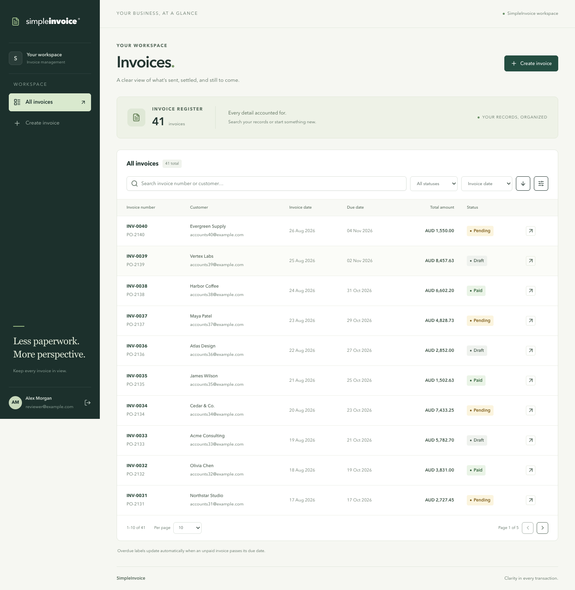
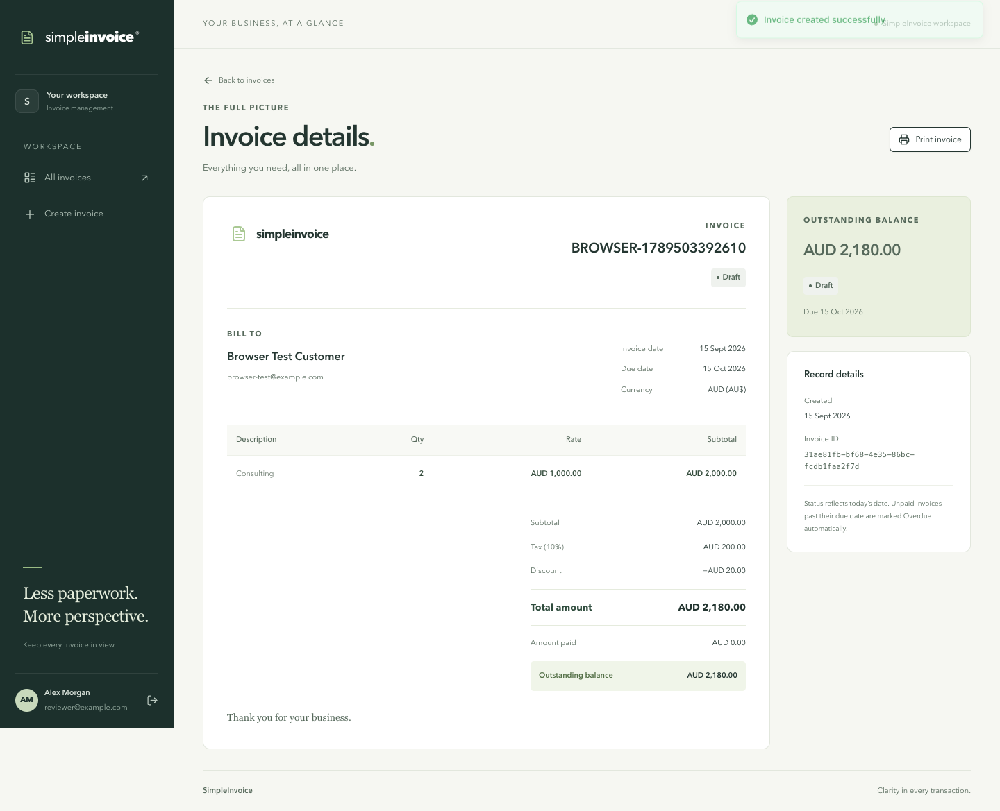

§ 2.1.1METAuthentication
SimpleInvoice / submission review
Assessment checklist complete.
Requirement-by-requirement assessment against the original assessment transcription, based on source inspection and verification evidence. Filename v3.0.0; the original document identifies itself as v2.3.1.
Assessment date: 16 September 2026 · Internal candidate review, not an employer grade.
100%Checklist fulfillment proxy
56/56Requirements assessed as met
0 partialPackaging / submission gaps
0 pendingAdministrative delivery
Scoring method: met = 1, partial = 0.5, pending = 0; each of the 56
consolidated checklist entries has equal weight. Repeated wording in the
specification is consolidated. This is a transparent tracking measure,
not an official weighted rubric or test-coverage percentage. All four
requested application features are implemented; repository/ZIP
availability and administrative delivery are complete based on candidate
confirmation.
Assessment verdict
Very close to the original requirements, with no core feature gap found in this review. Authentication, listing, details and one-item creation match the requested stack and behavior. The strongest evidence is real PostgreSQL integration testing of monetary precision, duplicate-number races and derived status filtering, backed by React flow tests and actual browser workflows.
The implementation already adds useful restraint and polish: HttpOnly JWT cookies, session-expiry handling, explicit migrations, idempotent seeding, literal search, stable pagination, exact money formatting, accessible labels and a printable detail page. Do not obscure these strengths by adding several unfinished product features.
Submission complete: the candidate confirmed source availability and completion of the repository ID, candidate email and on-time delivery requirements. These administrative items are accepted on that confirmation, not an independent delivery audit. CI remains optional and was not selected for implementation.
Selected improvements delivered · 16 September
- URL-backed register: validated search, status, dates, sort and pagination survive refresh, browser history and detail/back links, including a pending search.
- Keyboard/accessibility: keyboard-only core workflow, route focus, linked field errors, mobile focus containment and Escape/restore, stronger text contrast and reduced-motion support. Eight browser tests pass, including axe scans.
- Reviewer demo: Open the short captioned recording and technical walkthrough. The recorder verifies exact decimal totals, concurrent 201/409 responses and stored Pending → returned Overdue.
Requirement checklist
Status badges are the assessment findings. Checkboxes are your personal review marks and do not change the score. Marks persist in this browser when storage is available. Evidence links open source files; use your IDE for comfortable code reading.
§ 2.1.1METAuthentication
Implementation evidence
§ 2.1.1METAuthentication
Browser-managed HttpOnly, SameSite=Strict cookie; Secure is environment-controlled. Login also returns the JWT for API clients.
Implementation evidence
§ 2.1.1 / 2.3.3METAuthentication
§ 2.3.3METAuthentication
Implementation evidence
§ 2.1.2METInvoice list
Implementation evidence
§ 2.1.2METInvoice list
Implementation evidence
§ 2.1.2METInvoice list
SQL parameters and escaped LIKE wildcards preserve literal partial matching.
Implementation evidence
§ 2.1.2METInvoice list
Filters apply derived status before pagination, including expired Draft invoices.
§ 2.1.2METInvoice list
§ 2.1.2METInvoice list
Default 10; maximum 100; stable UUID tie-breaker.
§ 2.1.3METInvoice detail
§ 2.1.3METInvoice detail
Implementation evidence
§ 2.1.3METInvoice detail
Server decimal strings are displayed with exact cents; amount paid is also shown.
§ 2.1.4METInvoice creation
Request accepts one item object; separate item table permits future expansion.
Implementation evidence
§ 2.1.4METInvoice creation
A past-due Draft is correctly returned as derived Overdue. This follows the explicit read-time rule.
Implementation evidence
§ 2.1.4METInvoice creation
Unique constraint protects concurrent requests; duplicates return 409.
§ 2.1.4METInvoice creation
Implementation evidence
§ 2.1.4METInvoice creation
Implementation evidence
§ 2.1.4METInvoice creation
§ 2.1.4METInvoice creation
Backend validates ISO currency; precision and size limits are documented.
Implementation evidence
§ 2.1.4METInvoice creation
Omission and blank UI values use defaults; invalid negative values fail validation.
§ 2.1.4METInvoice creation
Implementation evidence
§ 2.1.4 / 2.3.2METInvoice creation
Decimal arithmetic; explicit half-up cent rounding. No frontend total calculation.
§ 2.2METFrontend
Vite and React Router replace Next.js as authorized; template provenance is documented.
Implementation evidence
§ 2.2METFrontend
Prior browser verification at 390px; screenshots cover all four screens. Not a full device matrix.
Implementation evidence
{kind=link}
§ 2.2METFrontend
Feature separation and typed API client support readability; maintainability remains a qualitative judgement.
Implementation evidence
§ 2.2METFrontend
§ 2.3METBackend / API
Implementation evidence
§ 2.3.1METBackend / API
Implementation evidence
§ 2.3.1METBackend / API
Implementation evidence
§ 2.3.1METBackend / API
page, pageSize, sortBy, ordering, status, keyword, fromDate and toDate; date bounds are inclusive invoiceDate filters.
§ 2.3.1METBackend / API
Uses the normative endpoint shape, rather than Appendix A legacy paging keys.
Implementation evidence
§ 2.3.2METBusiness logic / data
DTO/service validation and database constraint.
§ 2.3.2METBusiness logic / data
UTC defines today and is documented. Database enum/check allows only Draft, Pending and Paid.
§ 3.1–3.4METBusiness logic / data
UUIDs, foreign keys, bcrypt hash, numeric money, customer snapshot, creation metadata and indexes.
§ 2.3.4 / Appendix AMETSeeding
Paul invoice and payment values preserved; mock Overdue maps to stored Pending. Legacy non-model fields omitted and explained.
Implementation evidence
§ 2.3.4METSeeding
40 additional records; varied customers, dates, amounts and persisted statuses.
Implementation evidence
§ 2.3.4METSeeding
Also applies migrations; host and container paths documented; idempotent behavior tested.
Implementation evidence
§ 2.3.5METValidation / errors
Path UUID validation uses ParseUUIDPipe; rejects unknown/server-owned request fields.
§ 2.3.5METValidation / errors
Implementation evidence
§ 2.3.6METValidation / errors
Implementation evidence
§ 2.3.7METTesting / API docs
§ 2.3.7METTesting / API docs
Real PostgreSQL create → list → detail, plus actual browser workflow; exceeds the minimum.
Implementation evidence
§ 2.3.8METTesting / API docs
Implementation evidence
§ 2.3.8METTesting / API docs
§ 2.4.1METPackaging / configuration
Implementation evidence
§ 2.4.2 / 4.1METPackaging / configuration
npm start generates missing configuration, builds and starts Compose, and waits for health checks. Verified from a clean source copy without installed dependencies, using fresh database storage and isolated ports. Requires Node.js 24 and running Docker Compose; host build cache reused.
Implementation evidence
§ 2.4.2METPackaging / configuration
Default ports: frontend 5180, backend 3001, database 5432.
Implementation evidence
§ 2.4.3METPackaging / configuration
Implementation evidence
§ 2.4.3METPackaging / configuration
Only public reviewer demo values and placeholders; setup generates secrets. This is source inspection, not a comprehensive secret scan.
Implementation evidence
§ 4.2METSubmission / README
Reviewer demo, reproducible evidence, decisions and URL-state behavior are documented. The stray Listing prefix has been corrected.
Implementation evidence
§ 4.2METSubmission / README
The candidate confirmed that the reviewed source is available through the repository or ZIP for submission. Marked complete based on candidate confirmation.
Implementation evidence
§ 4.2METSubmission / README
The candidate confirmed completion of the repository ID, candidate email and delivery-before-deadline requirements. Marked complete based on candidate confirmation; no private delivery details are reproduced here.
Implementation evidence
Evidence and confidence
| Evidence | Result | Scope / confidence |
|---|---|---|
| Current source review | All functional checklist entries supported | Controllers, DTOs, domain logic, repository, frontend screens, seed, Compose, configuration and tests inspected. |
| Baseline unit tests, 16 September | 100 passed: 58 backend + 42 frontend | Baseline before request logging. A later backend run passed 65 tests; the frontend baseline remains 42. These were separate runs, not a fresh combined run. See the verification record. |
| PostgreSQL E2E rerun on 16 September | 43 passed | Dedicated test database; no truncation of the demo database. |
| Compose status checked on 16 September | All three services healthy | Existing running stack on localhost:5180. Clean source-copy startup verified using fresh storage, isolated ports and host build cache. |
| Browser/UI verification, 15–16 September | 8 browser tests passed at the UI baseline; frontend rebuilt; type and formatting checks passed | Updated verification record. Screenshots refreshed by the browser suite. Dependency audits were not rerun for this update. |
Submission preparation and verification status
- Source availability — complete. Repository or ZIP availability confirmed by the candidate.
-
Exercise the reviewer setup from a clean checkout.
npm startis implemented: it generates a missing .env, builds and starts Compose, then waits for health checks. Clean source-copy startup was verified with fresh storage and isolated ports. That check reused the host build cache; a fresh remote checkout has not been verified. Bare Compose still requires an existing .env. - Review the README from a clean checkout. The stray prefix is fixed and the reviewer demo is linked near the top. Confirm the frontend default of 5180 and exercise the documented run commands.
- Administrative delivery — complete. Repository ID, candidate email and delivery before the deadline confirmed by the candidate.
Keep the scope disciplined
Do not prioritize registration, MFA, refresh-token infrastructure, manual invoice status updates, payment integrations, tenant/role management, dashboards or microservices for this submission. They expand the security and product surface without strengthening the requested four-feature workflow.
Do not add multiple line items: the assessment explicitly asks for exactly one. Keep backend-owned totals and the required status rules. An overdue Draft is expected under the specified derivation rule; changing it to look more intuitive would reduce compliance.
URL-backed list state, keyboard/accessibility polish and the evidence-backed demo are delivered. Local request/authentication logging and print header/footer cleanup were added afterward. Clean source-copy startup is verified; a fresh remote checkout was not tested. Administrative delivery is complete based on candidate confirmation.
Local-only scope and follow-up changes
This is exclusively a local take-home assessment using sample data; production deployment is not planned. SEC-001, SEC-002 and SEC-003 are acknowledged without fixes in the security review. They are not submission blockers under that scope.
Backend requests now receive UUIDs in the X-Request-ID response header, with correlated request, error and authentication event logs. Sensitive request data is omitted. The logging follow-up passed 65 backend tests, typecheck and build; the database and full browser suites were not rerun for it.
Print styles now suppress browser margin headers and footers while
preserving invoice padding. The frontend build passed and the reviewer
confirmed the fix after refreshing Chrome's cached page. Long-content
pagination checks above remain optional and are not claimed complete.
After source changes, rebuild with
docker compose up -d --build --wait and refresh the page.
Manual status changes have no UI or API and are outside the required scope. New invoices are stored as Draft; Overdue is derived at read time. Seed data supplies Pending and Paid examples.
Existing visual evidence
{kind=link}

{kind=link}
